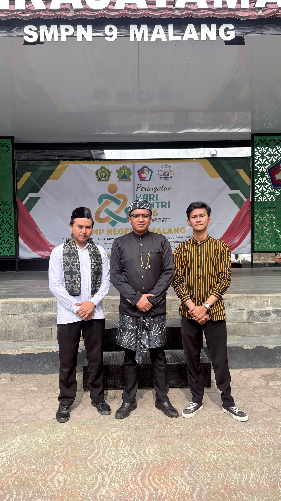
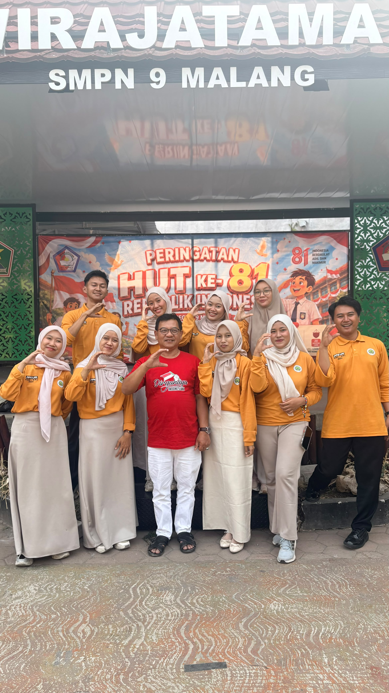
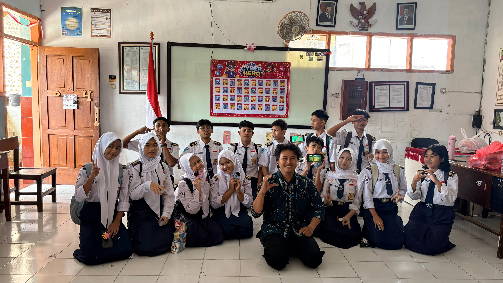

01
PERENCANAAN
Analisis Produk Rancangan Pembelajaran
Ulasan terhadap rancangan atau perencanaan pembelajaran yang digunakan sebagai dasar praktik mengajar mandiri.
DOKUMENTASI PROFESIONAL PENDIDIK
Dokumentasi proses perencanaan, pelaksanaan, evaluasi, dan refleksi dalam Praktik Mengajar Mandiri.
PORTOFOLIO DIGITAL / PPG PRAJABATAN
Merancang dengan tujuan. Mengajar dengan refleksi.
ISI PORTOFOLIO
Pilih bagian untuk membaca analisis dan melihat bukti pendukung kegiatan Praktik Mengajar Mandiri.
PERENCANAAN
Ulasan terhadap rancangan atau perencanaan pembelajaran yang digunakan sebagai dasar praktik mengajar mandiri.
MATERI AJAR
Analisis kesesuaian, kedalaman, dan penerapan materi dalam kegiatan pembelajaran.
MEDIA
Evaluasi media yang digunakan, manfaatnya, serta efektivitasnya dalam mendukung tujuan belajar.
PRAKTIK MENGAJAR
Video pelaksanaan praktik mengajar mandiri menjadi bukti
dokumentasi proses pembelajaran yang telah dilaksanakan. Melalui
video ini, saya dapat melakukan refleksi terhadap tahapan
pembelajaran, mulai dari kegiatan pendahuluan, penyampaian
materi, pelaksanaan aktivitas peserta didik, hingga kegiatan
penutup.
Analisis video difokuskan pada kesesuaian pelaksanaan dengan
rancangan pembelajaran, kemampuan menyampaikan materi,
pengelolaan kelas, interaksi dengan peserta didik, serta
penerapan strategi pembelajaran. Dokumentasi ini menjadi bahan
evaluasi untuk mengetahui aspek yang sudah berjalan dengan baik
dan bagian yang masih perlu ditingkatkan pada praktik mengajar
berikutnya.
PENGEMBANGAN DIRI
Kegiatan nonmengajar merupakan bagian dari pengalaman praktik di
lingkungan sekolah yang memberikan kesempatan kepada saya untuk
mengenal dan berpartisipasi dalam berbagai aktivitas di luar
proses pembelajaran di kelas.
Melalui kegiatan ini, saya memperoleh pengalaman mengenai
kehidupan dan budaya sekolah, kerja sama dengan warga sekolah,
serta tanggung jawab dalam mendukung pelaksanaan program
sekolah. Keterlibatan dalam kegiatan nonmengajar juga menjadi
sarana untuk mengembangkan kemampuan komunikasi, kedisiplinan,
kepedulian, dan kemampuan beradaptasi dengan lingkungan kerja.
Dokumentasi berikut menjadi bukti keterlibatan saya dalam
kegiatan nonmengajar selama pelaksanaan praktik di sekolah.



ASESMEN
Instrumen penilaian merupakan perangkat yang digunakan untuk
memperoleh informasi mengenai proses dan hasil belajar peserta
didik. Dalam praktik mengajar mandiri, instrumen penilaian
berperan untuk mengetahui ketercapaian tujuan pembelajaran serta
memberikan gambaran mengenai pemahaman dan keterampilan peserta
didik terhadap materi yang dipelajari.
Analisis instrumen penilaian dilakukan dengan memperhatikan
kesesuaian antara bentuk penilaian dan tujuan pembelajaran,
kejelasan indikator, serta kemampuan instrumen dalam mengukur
aspek pengetahuan maupun keterampilan. Hasil penilaian juga
dapat digunakan sebagai bahan refleksi untuk mengetahui bagian
materi yang telah dipahami dan bagian yang masih membutuhkan
penguatan.
Dokumen berikut merupakan bukti perangkat penilaian yang
digunakan atau disusun dalam pelaksanaan praktik mengajar
mandiri.
Arsip instrumen penilaian pada pelaksanaan pembelajaran pertama.
Arsip instrumen penilaian pada pelaksanaan pembelajaran kedua.
REFLEKSI AKHIR
Melalui proses merencanakan, melaksanakan, dan mengevaluasi pembelajaran, saya terus belajar menjadi pendidik yang reflektif, adaptif, dan berpihak pada peserta didik.
CATATAN PERJALANAN PENDIDIKTENTANG PENYUSUN
Bagian ini memuat identitas singkat penyusun portofolio dan konteks pelaksanaan Praktik Mengajar Mandiri.